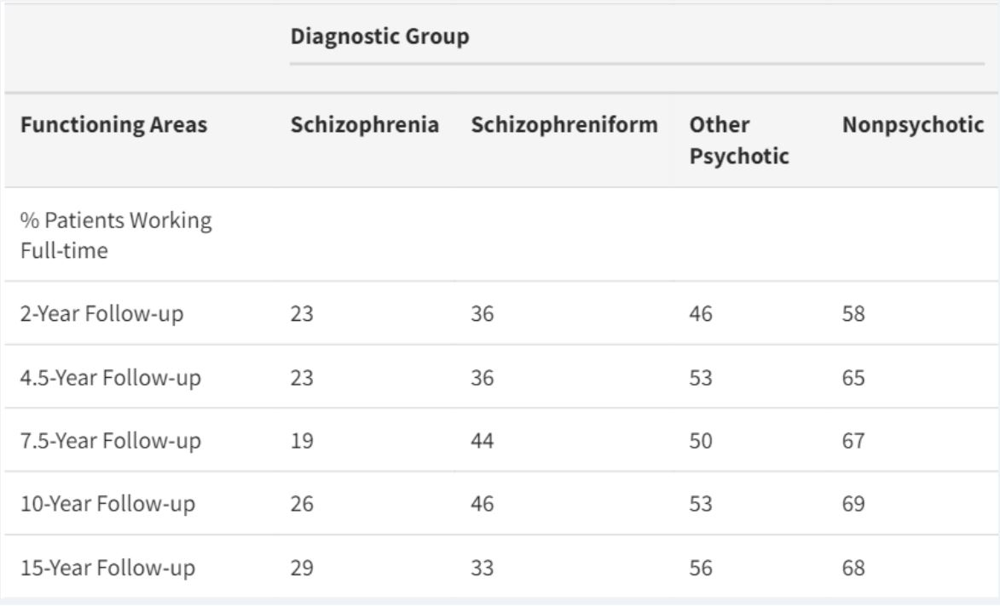

Do Patients with Schizophrenia Ever Show Periods of Recovery? A 15-Year Multi-Follow-up Study
Published in 2005, psychologist Martin Harrow of the University of Illinois College of Medicine and his colleagues followed schizophreinic patients over 15 years. Results show Schizophrenia is not beyond cure.
Struggles of Schizophrenia
Most schizophreinic patients are believed to be unable to function in their day to day lives, so as to live independently and provide for themselves.

Proof of recovery
Cumulatively, over the 15-year period slightly over 40% of patients with schizophrenia showed 1 or more periods of recovery. And 30% are holding full time positions. Evidently, schizophrenic patients are able to live normal lives.